School Run
Espace virtuel interactif
22 au 25 mars
Accéder au projet
Diffusion en direct
25 mars, 19h à 21h
Assister à la présentation
Résumé du projet :
School Run (Parcours scolaire) est un jeu sous forme d’expérience interactive qui représente une session d’études au collégial. Le joueur contrôle un étudiant qui court le long de son parcours scolaire. Il doit l’aider à amasser le plus possible de A+, tout en évitant les mauvaises notes et les distractions. Certains éléments du jeu seront mis en emphase par des projections sur les murs. Avec la pandémie, les études sont encore plus stressantes et démotivantes. Nous avons donc pensé qu’un jeu avec une approche humoristique serait une bonne idée pour remonter le moral des étudiants, en plus de créer un sentiment rassembleur, car plusieurs personnes peuvent s’identifier à la situation. Pour la version en ligne, seule la partie du jeu sera accessible.
Réalisé par :
 Pamela Sanscartier
Pamela Sanscartier Jan Carlos Delahoz
Jan Carlos Delahoz David Eduardo Weng Cen
David Eduardo Weng Cen
{kind=link}
{kind=link}
{kind=link}
{kind=link}
{kind=link}
Journal de création
Documentation du projet
Lien vers le git de Parcours scolaire
Semaine 1 - 25 au 29 janvier 2021
Jour 1 sur 52
On commence par se donner des nouvelles sur notre temps des fêtes (pas mal calme vu la situation). S'ensuit alors quelques minutes de discussion pour se donner le courage de commencer cette dernière session. C'est parti !
Cette semaine a principalement tourné autour de l'organisation du reste du projet : ce qu'il reste à faire, comment on va le faire, qui va le faire...
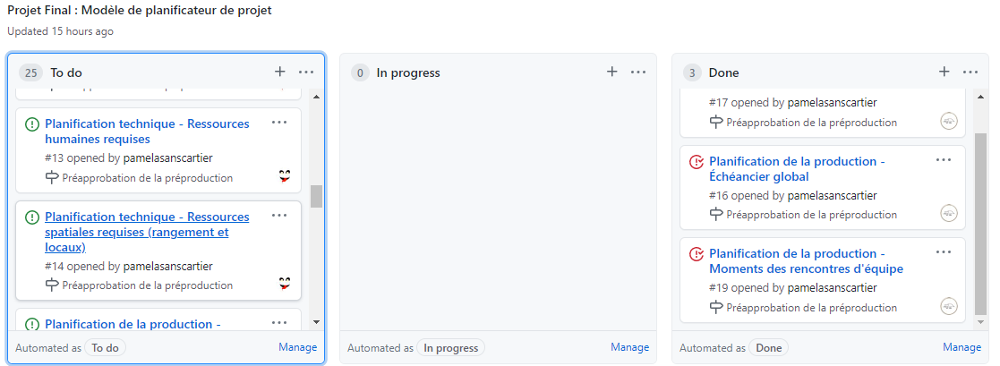{kind=link}
Nous avons également eu des discussions sur comment organiser la pièce. Voici où nous sommes pour l'instant :
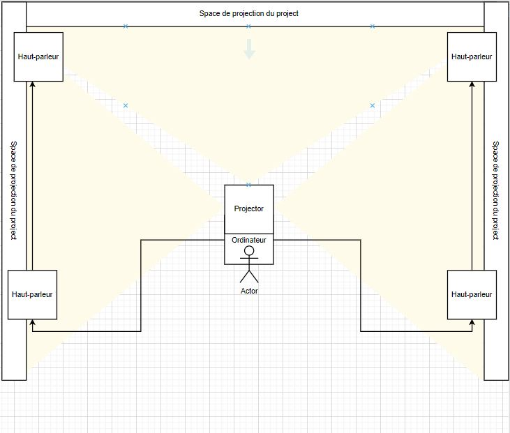{kind=link}
La planification des branchements a également commencé, mais tout ceci requiert encore bien des recherches de notre côté afin de bien déterminer quels seront les équipements nécessaires.
Semaine 2 - 30 janvier au 5 février 2021
Jour 10 sur 52 (oui, déjà 19% du temps alloué pour le projet est passé)
Après l'évaluation formative de la préproduction, nous nous sommes concentrés sur deux choses : corriger la préproduction selon les conseils des professeurs et faire des recherches pour un nouvel élément. En effet, au lieu que l'utilisateur interagisse avec le jeu avec l'aide du clavier et de la souris, nous nous sommes tournés vers une façon plus hors du commun (merci Guillaume) : avec un tapis style Dance Dance Revolution
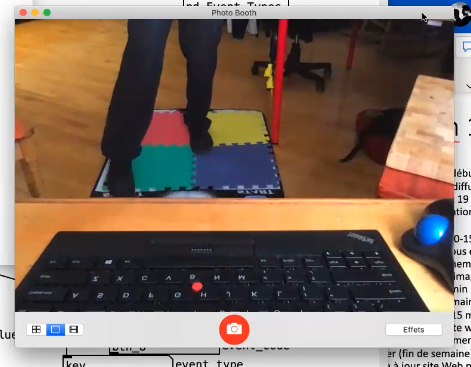{kind=link}
À partir de ce code, nous allons pouvoir faire communiquer les données du tapis jusqu'au jeu.
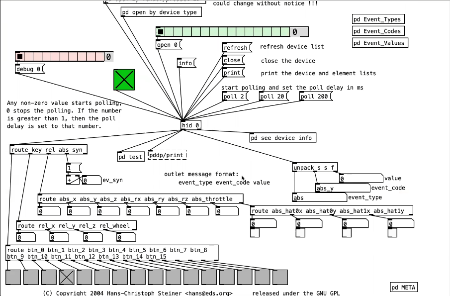{kind=link}
À suivre...
Semaine 3 - 6 au 12 février 2021
Jour 17 sur 52 (ou 33%, pour les adorateurs de statistiques)
Notre but principal de la semaine était d'aller au studio afin de commencer l'installation de l'équipement. Ne sachant pas trop par quoi commencer, nous nous sommes dit : «On va faire ça simple».
C'est ainsi que commencèrent 30 minutes de perte de temps totale. Nous voulions brancher un projecteur à l'ordinateur, mais peu importe ce qu'on faisait, la communication ne se faisait pas. Après avoir demandé de l'aide, nous avons réalisé que nous avions branché le fil HDMI dans la carte mère au lieu de la carte graphique.
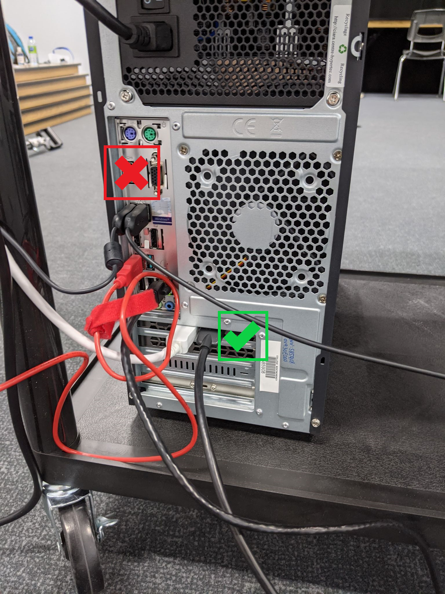{kind=link}
Après avoir modifié le branchement, nous avons enfin pu commencer à projeter
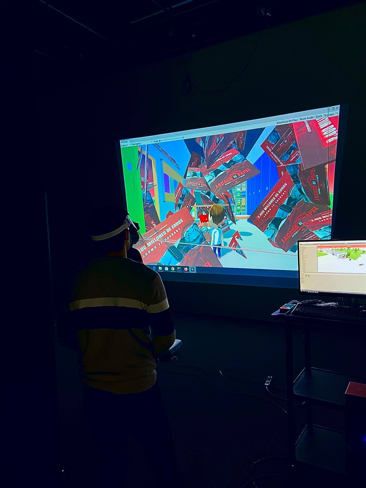{kind=link}
Nous nous sommes installés devant la projection pour nous donner une vague idée d'à quoi le projet va ressembler à la fin. Nous avons bien hâte de continuer ça !
Semaine 4 - 13 au 19 février 2021
Jour 24 sur 52 (46% (plus communément sous la forme 6/13)... ça s'en vient !)
Objectif de la semaine : finir d'installer l'équipement. Résultat : échec (ok pas total, les projecteurs sont installés. Pour le reste de l'équipement, on ne l'a pas, donc c'est pas mal dur de continuer l'installation.).
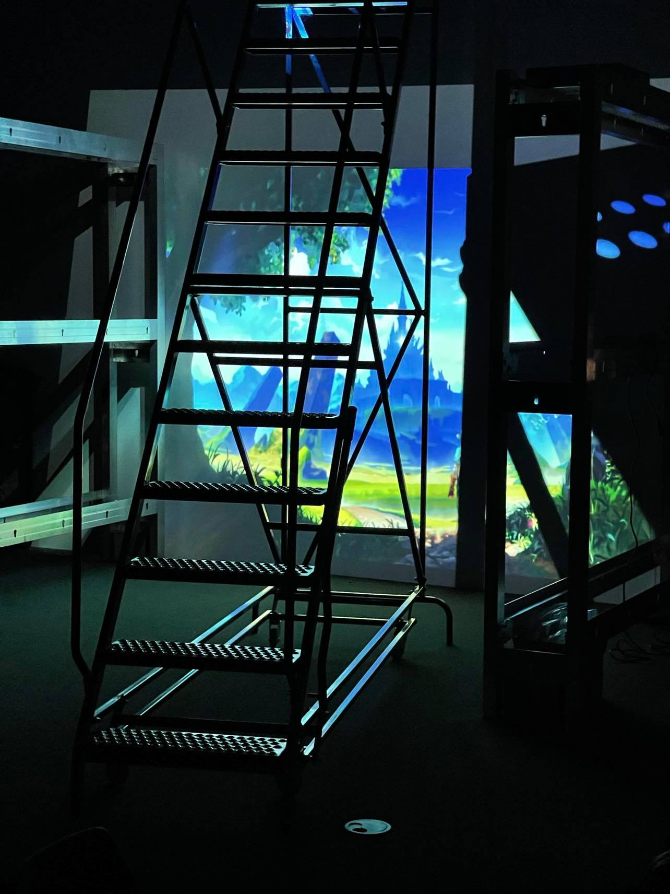{kind=link}
Les animations commencent à prendre vie.

Finalement, côté code, ça avance bien ! Nous arrivons à bien faire les liens entre les évènements du jeu et les répercussions sur le monde réel ! VICTOIRE !

Semaine 5 - 20 au 26 février 2021
Jour 31 sur 52 (Ok on respire... on a dépassé la moitié !)
Pour cette semaine, il fallait présenter un prototype fonctionnel. Nous avons donc commencé par monter les murs, afin de faciliter le positionnement des projecteurs.
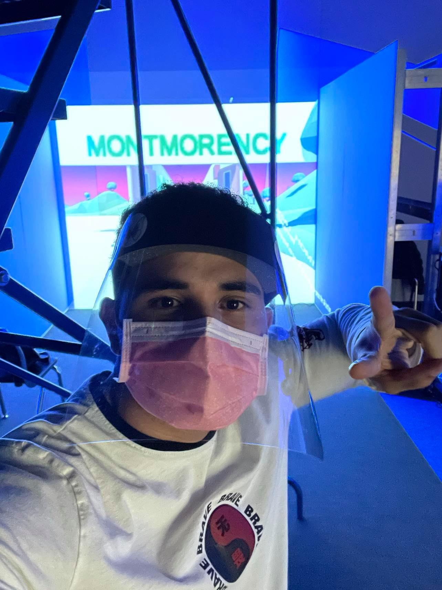{kind=link}
Ensuite nous avons commencé à travailler avec Madmapper, afin de contrôler ce qui sera projeté sur chaque mur. Nous avons utilisé Spout afin d'établir la communication entre les logiciels.

Nous avons reçu le tapis ! Pour l'instant le personnage réagit bizarrement aux commandes, mais il répond aux flèches du tapis !
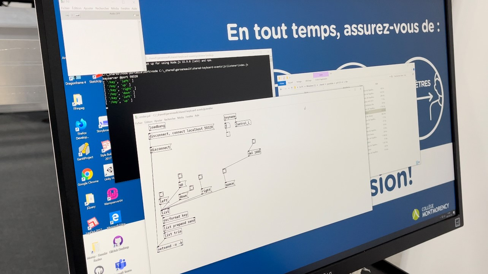 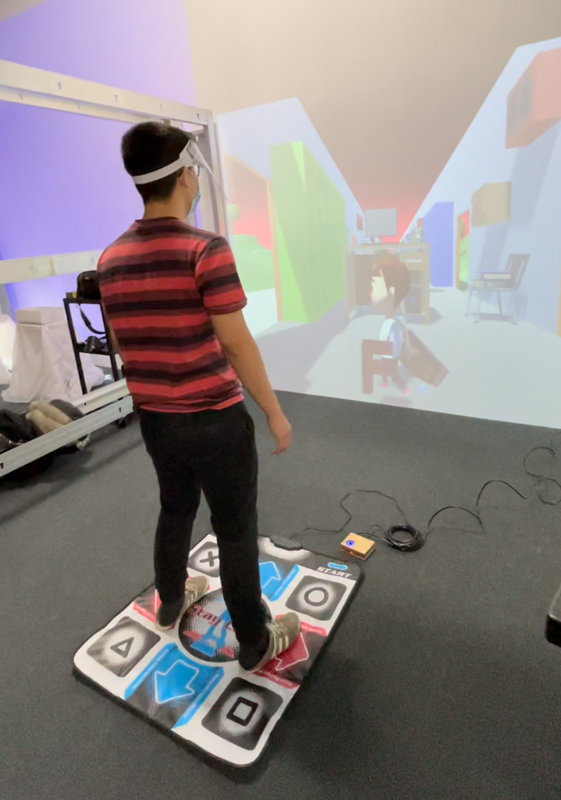{kind=link}
{kind=link}
Semaine 6 - 27 février au 5 mars 2021
Jour 38 sur 52 (75% ! Ça commence vraiment à prendre forme.)
Nous avons principalement travaillé sur le jeu cette semaine : ajouter des obstacles, puis les effets de particules et les effets sonores.
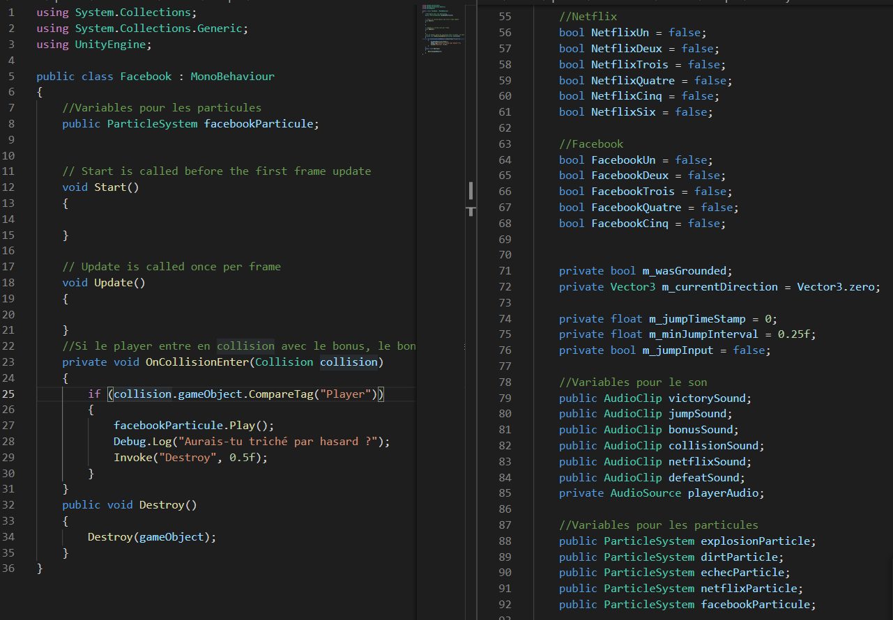{kind=link}
Le travail sur les animations a avancé. Celle du début est presque terminée.
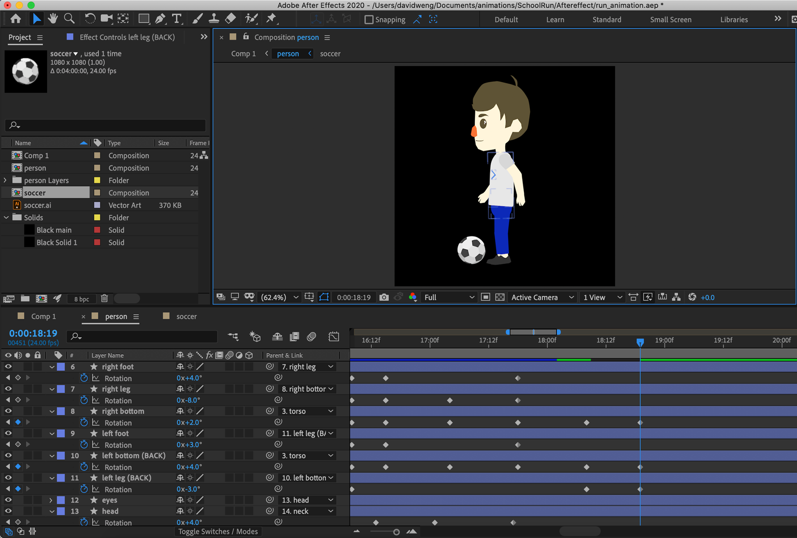{kind=link}
David a également créé la vignette pour représenter notre projet !
{kind=link}
Semaine 7 - 6 au 12 mars 2021
Jour 45 sur 52 (Avant-dernière semaine, on lâche pas la patate !)
L'installation est terminée !
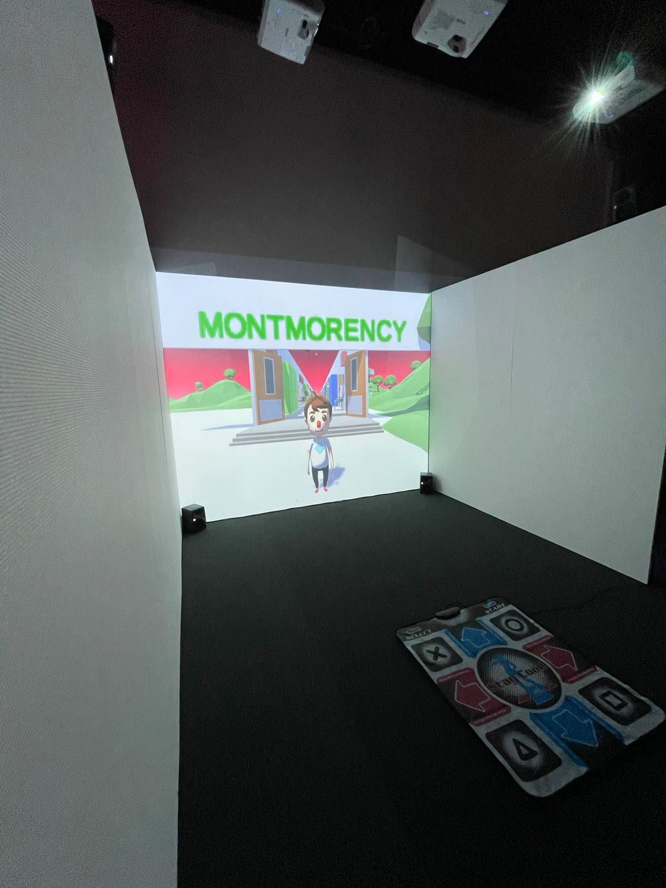{kind=link}
Bien sûr, pour avoir un tel résultat, beaucoup de travail a été demandé. Une pause était la bienvenue !
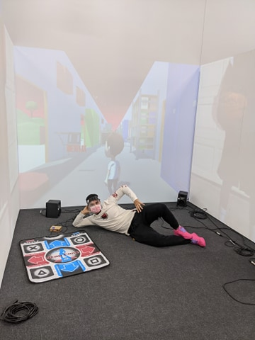 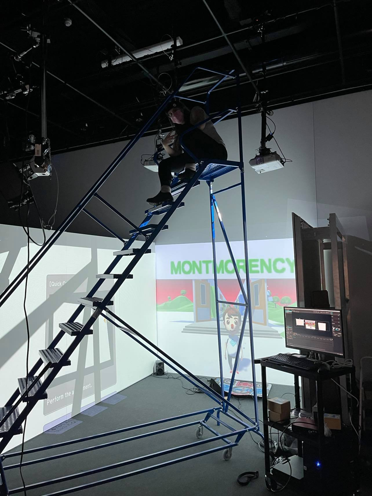{kind=link}
{kind=link}
L'animation du début est terminée et les montages vidéos aussi.
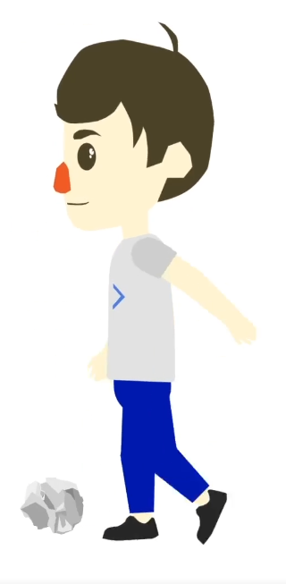{kind=link}

Semaine 8 - 13 au 19 mars 2021
Jour 52 sur 52 (Et oui les enfants, 52 sur 52, ça veut aussi dire : 100%, terminé, achevé, complet, fini !)
Tout est fini ! Il ne reste que quelques détails pour la version en ligne qui restent à régler. Ce n'est qu'une question d'une heure ou deux.
Malgré les 1800 problèmes que nous avons eu, surtout avec le son, c'est maintenant fonctionnel. Yé !
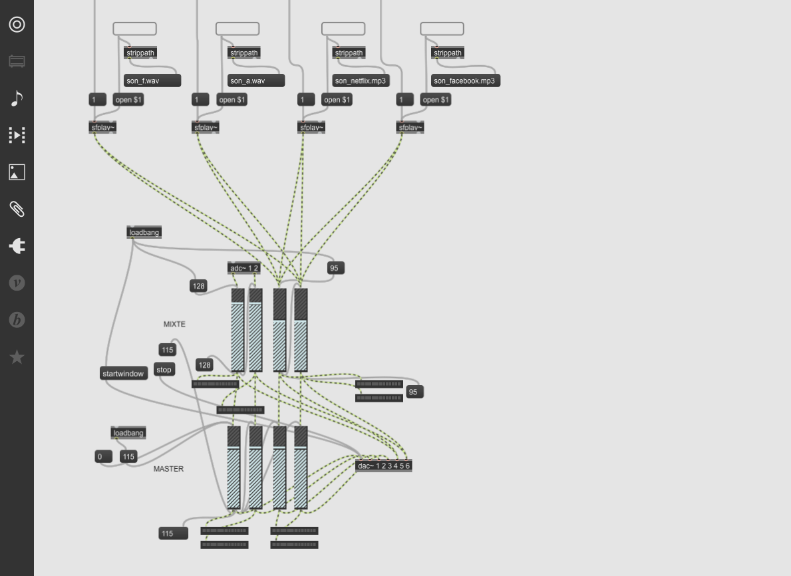{kind=link}
Nous sommes vraiment satisfaits, mais nous allons apprécier la chose encore plus après une nuit de sommeil de plus de 3h.